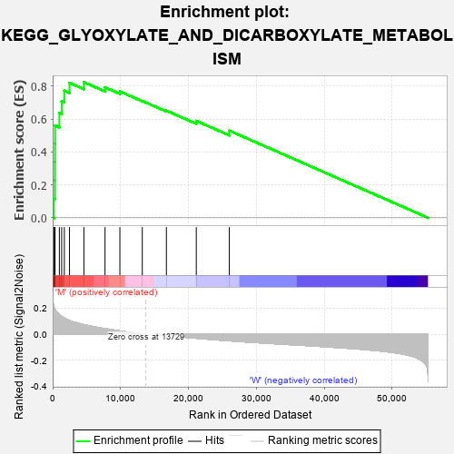
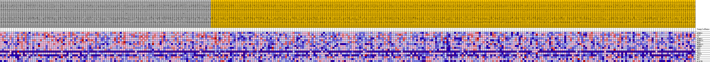
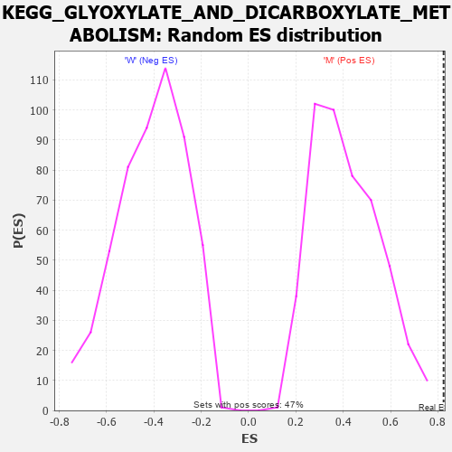

| Dataset | MUC16.MUC16.cls#M_versus_W.MUC16.cls#M_versus_W_repos |
| Phenotype | MUC16.cls#M_versus_W_repos |
| Upregulated in class | M |
| GeneSet | KEGG_GLYOXYLATE_AND_DICARBOXYLATE_METABOLISM |
| Enrichment Score (ES) | 0.8239454 |
| Normalized Enrichment Score (NES) | 2.0027997 |
| Nominal p-value | 0.0 |
| FDR q-value | 0.05231807 |
| FWER p-Value | 0.072 |

| PROBE | DESCRIPTION (from dataset) | GENE SYMBOL | GENE_TITLE | RANK IN GENE LIST | RANK METRIC SCORE | RUNNING ES | CORE ENRICHMENT | |
|---|---|---|---|---|---|---|---|---|
| 1 | MTHFD1 | na | 193 | 0.210 | 0.1173 | Yes | ||
| 2 | ACO2 | na | 314 | 0.195 | 0.2274 | Yes | ||
| 3 | CS | na | 324 | 0.195 | 0.3391 | Yes | ||
| 4 | MTHFD2 | na | 329 | 0.194 | 0.4506 | Yes | ||
| 5 | MTHFD1L | na | 351 | 0.192 | 0.5604 | Yes | ||
| 6 | MDH1 | na | 988 | 0.150 | 0.6354 | Yes | ||
| 7 | MTHFD2L | na | 1327 | 0.137 | 0.7081 | Yes | ||
| 8 | GRHPR | na | 1720 | 0.125 | 0.7726 | Yes | ||
| 9 | MDH2 | na | 2478 | 0.106 | 0.8198 | Yes | ||
| 10 | ACO1 | na | 4599 | 0.074 | 0.8239 | Yes | ||
| 11 | HAO1 | na | 7713 | 0.043 | 0.7926 | No | ||
| 12 | AFMID | na | 9900 | 0.026 | 0.7677 | No | ||
| 13 | HAO2 | na | 13198 | 0.003 | 0.7099 | No | ||
| 14 | PGP | na | 16749 | -0.009 | 0.6509 | No | ||
| 15 | HYI | na | 21150 | -0.030 | 0.5887 | No | ||
| 16 | GLYCTK | na | 26014 | -0.050 | 0.5294 | No |

